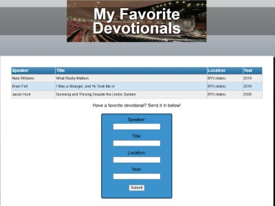
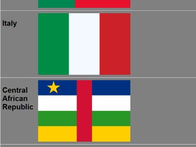
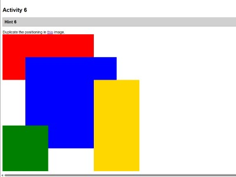
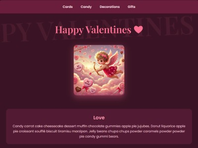

In this favorite devotional activity, I learned how to set up and style tables using HTML and CSS.

In this grid flags activity, I learned how to structure and reposition colored blocks using the CSS grid.

In this positioning activity, I learned how to use a variety of different CSS display types, including flexbox and grid.

In this valentines activity, I learned how to prompt AI models to give a unique style to provided HTML.
